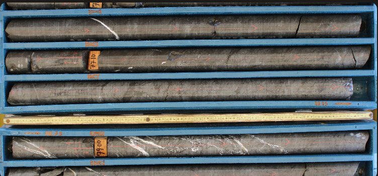
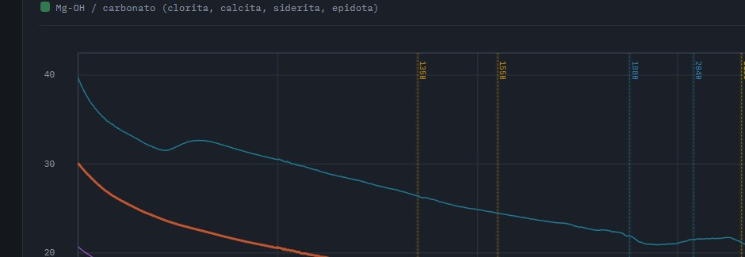
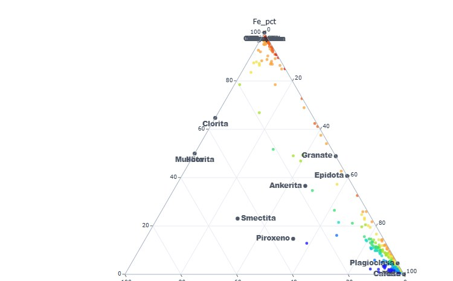

GeoIA integra visión artificial para cajas de sondaje, interpretación SWIR, balance de masas y delimitación de dominios de alteración con machine learning. Convierte datos de campo en insumos cuantitativos para modelamiento geológico y geometalúrgico.
Cada módulo vive en su propia ruta y comparte el mismo estándar de datos.

Captura realVisión artificial en fotos de cajas → detección de fracturas, tacos, cálculo automático de RQD y recuperación geotécnica.
Abrir módulo
Captura realAnálisis espectral SWIR (350–2500 nm) comparado con librerías USGS / AusSpec. Identificación automática de alteración (micas, arcillas, cloritas) vía SAM.
Abrir módulo
Captura realModelamiento geoquímico vía BVLS y zonación de alteración. Correlación multi-fuente (ensayos + SWIR + litología) en un log continuo.
Abrir móduloMapas de favorabilidad mineral: teledetección, lineamientos del DEM y ponderación / XGBoost. Carga TerraSpec de superficie o sondaje sobre el mismo mapa.
Abrir móduloSeis dominios de alteración hidrotermal a partir de scores SWIR y geoquímica. El geólogo firma MOD_ALT; Random Forest extiende la clasificación al resto de la malla.
Abrir móduloIngresos a la web y ejecuciones de cada módulo, total histórico.
Cargando datos del contador…
—
Ingresos
—
Auto RQD
—
Espectral
—
Balance
Escríbeme directo o deja tu sugerencia en el formulario — leo todas.
jhonatangeo21@gmail.com